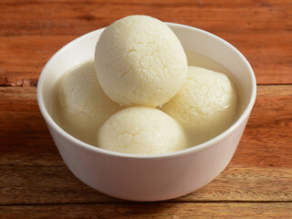

Bengali Rosogolla

Description
Bengali Rasgullas are homemade paneer (Cottage cheese) sweet dish,
round paneer balls soaked in sugar syrup. This is a sweet dessert
delicacy from state of Bengal, these are very light and delicious,
you can never go wrong with Bangali Rasgulla. This recipe is made using a pressure cooker.
Ingredients
- 4 cup milk
- 0.5 cup lemon juice
- 1.5 cup sugar
- 4.5 cup water
Steps
- Mix lemon juice and hot water.
- Boil milk and gradually add the lemon juice mixture.
- Once milk fat has separated, drain the whey.
- Knead the fat into paneer
- Divide dough into smooth balls
- Mix sugar and water into a pressure cooker and bring to boil
- Add the paneer balls and cook for 7 minutes